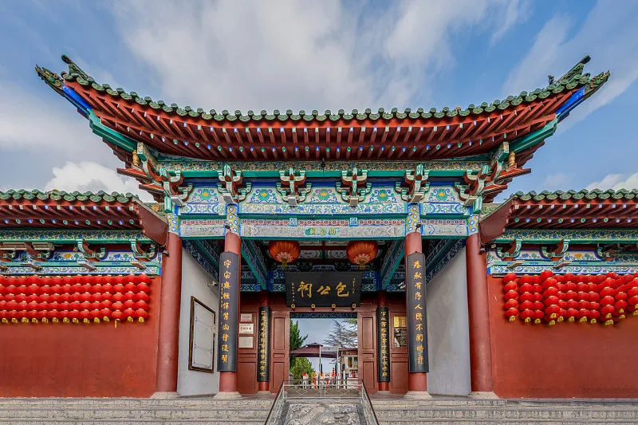

菊香水城，宋都开封
HE NAN KAI FENG

龙亭公园位于开封城内西北隅，占地面积1300多亩。全园包括午门、玉带桥、朝门、照壁、朝房、龙亭、北宋、皇宫宸拱门遗址、碑亭、北门及东门等清朝万寿宫建筑群体，还有潘杨二湖、春园、盆景园、号称中原一绝的植物造型园及长廊水榭等园林景观。国家 AAAA 级旅游风景区龙亭，位于开封城内南北交通中枢干线中山路北端。公元 780 年，唐德宗李适在开封（现在龙亭所在地）建永平军节度使治所，即藩镇衙署。随着时间的推进，五代中的后梁、后晋、后汉、后周相继将其改为皇宫。北宋开国皇帝赵匡胤陈桥兵变后，也把这里作为皇宫。金后期同样相中了这块风水宝地。明王朝统治者更是大兴土木，修建了周藩王府。 1925 年改为龙亭公园。 1927 年，冯玉祥二次主豫时，更名中山公园。 1953 年正式命名为龙亭公园。 |

清明上河园清明上河园位于河南省开封城西北隅，东与龙亭风景区毗邻，是以宋代张择端的名《清明上河图》为蓝本，清明上河园集中再现原图风物景观的大型宋代民俗风情游乐园。占地面积510亩，为国家黄河旅游专线重点配套工程.主要建筑有城门楼、虹桥、街景、店铺、河道、码头、船坊等。园区按《清明上河图》的原始布局，集中展现宋代诸如酒楼、茶肆、当铺、汴绣、官瓷、年画等现场制作；荟集民间游艺、杂耍、盘鼓表演；神课算命、博彩、斗鸡、斗狗等京都风情。并根据宋氏历史故事表演“文包武杨”及宋代婚礼习俗等节目。晚间的天型晚会《东京梦华魂》把游东活动带向高潮。游人亦可换作宋装，手持宋币，尽情感受古人生活习俗。目前定时表演节目：包公迎宾、杨志卖刀、林冲怒打高衙内、燕青打擂、李师师艺会情公子、王员外招婿、宋式民俗婚礼、编钟乐舞、马术、气功绝活等２０余个。新开业的清明上河园二期工程，反映了皇家园林建筑的宏伟，园中还建有大型宋代游乐场所，荡秋千、荡宋船、知难而进、进退两难、平衡竞标等宋代民间娱乐设施让您尽情恣意。晚间的《东京梦华》大型专场杂技晚会，把游乐活动推向高潮，令人流连忘返。 |
|

包公祠位于开封市包公湖畔，占地一公顷左右。主展区有大殿、二殿、东西配殿、回廊、碑亭、大门、二门等，陈列包公铜像、铜铡及包公断案蜡像、包公史料典籍、《开封府提名记碑》、碑文等。风格古朴，庄严肃穆。 |
大相国寺大相国寺位于开封市中心，是中国著名的佛教寺院，始建于北齐天保六年（555年）。传说中，原为战国魏公子无忌——信陵君的宅院。后寺院毁于战火，唐景云二年（公元711年）重建。该寺历史悠久，是我国汉传佛教十大名寺之一，在中国佛教史上有着重要的地位和广泛的影响。相国寺原名建国寺，唐代延和元年（712年），唐睿宗因纪念其由相王登上皇位，赐名大相国寺。北宋时期，相国寺深得皇家尊崇，多次扩建，占地达500余亩，辖64个禅、律院，养僧千余人，是京城最大的寺院和全国佛教活动中心。《水浒传》描写的鲁智深倒拔垂杨柳的故事，就发生在其所辖之地。后因战乱水患而损毁。清康熙十年（1671年）重修。目前保存有天王殿、大雄宝殿、八角琉璃殿、藏经楼、千手千眼佛等殿宇古迹。1992年8月恢复佛事活动，复建钟、鼓楼等建筑。整座寺院布局严谨，巍峨壮观，2002年被评定为国家AAAA旅游景点。 |
开封铁塔铁塔公园位于中国河南省开封市城区的东北隅，是以现存的铁塔（开宝寺）而命名的名胜古迹公园，开封铁塔占地面积51.24公顷,是中国100家名园之一。铁塔位于铁塔公司的东半部，是园内重要的文物， 也是主要的景点，建于公元1049年，是1961年我国首批公布的国家重点保护文物之一，素有“天下第一塔”的美称。铁塔高55.88米,八角十三层,因此地曾为开宝寺,有称“开宝寺塔”,又因遍体通彻褐色琉璃砖,混似铁铸,从元代起民间称其为"铁塔"。铁塔以卓绝的建筑艺术及宏伟秀丽的身资而驰名中外,它设计精巧,完全采用了中国传统的木式结构形式,塔砖饰以飞天,麒麟,等数十种图案,砖与砖之间如同赴凿,有沟有槽,垒砌严密合缝。建成九百多年来, 历经战火,水患,地震等灾害,至今巍然屹立,实为建筑专家和游人叹为观止。１９８９年修建，仿汉白玉砌成，系三门牌楼式仿宋建筑，宽７０米，高１２米，大门左右墙壁上，对称镶嵌着８块庄严、肃穆、圣洁青石神佛坐像。 １９８６年为供奉北宋文物“接引佛”而建。该殿为重檐歇山式建筑，殿前，石师雄踞，鼎香缭绕；殿周，２４根大柱抱殿而矗；大殿台基，青石栏杆拦护，妙趣横生的９６只小狮子环绕排开。 |
翰园碑林位于开封龙亭湖西畔，是开封市中国老年书画研究会理事李公涛自筹资金，于1985年始行创建的。这是中国历史上第一座最大的民办碑林。碑林分为山水风景区和碑廊布展区两大部分，占地120亩，竖碑3800块。分设现代名人碑廊、中山碑廊、宋代碑廊、帝王名臣碑廊、友谊碑廊等十大碑廊区。位居中国碑林之首。 |